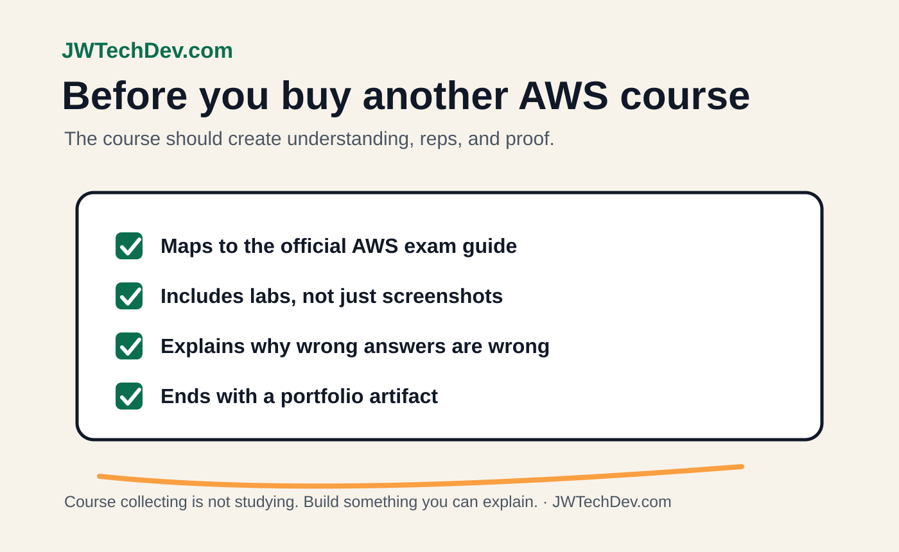

Best AWS course for beginners: what to look for before paying
The best beginner AWS course is not always the longest one. It is the one that helps you understand, practice, explain, and ship a small proof project.

Quick answer
Choose an AWS course that teaches concepts, includes labs, explains wrong answers, points you toward a small project, and stays close to the official AWS exam guide. Avoid courses that make you memorize service names without building judgment.
Beginner AWS course checklist
Exam guide alignment
The course should map to the current AWS exam guide instead of random service trivia.
Hands-on labs
You need to click, configure, break, fix, and explain things.
Practice questions
Good explanations matter more than the raw number of questions.
Project path
The course should help you produce a portfolio artifact, not just a completion certificate.
Before you buy another course
Get the free AWS beginner certification map and use it to decide what you actually need next.
Get the checklistWhat to avoid
Avoid course collecting. If you watch five beginner courses without building anything, you are not studying anymore. You are buffering.
Also avoid courses that skip IAM, billing, logs, and basic networking. Those topics might not feel exciting, but they are where real cloud confidence starts.
The study loop that works
Use a simple loop: learn one concept, write it in plain English, answer practice questions, build or diagram one small example, then explain the tradeoff. That loop turns study time into material you can use in interviews, posts, and projects.
Sources checked
Get the free starter kit
Use the AWS course checklist, certification map, and portfolio notes to study with a cleaner plan.
Send me the kit